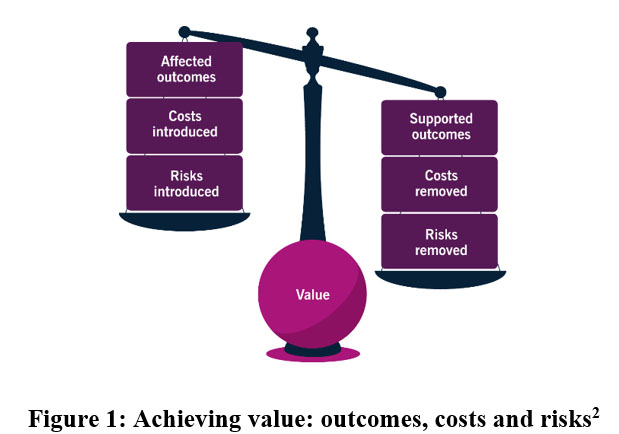

Products and services
Products and servicesThis chapter defines:
•Products and services
•Utility
•Warranty
•Output
•Outcome
•Risk
The services an organisation provides are based on one or more products. Products are created from configurations of the resources to which an organisation has access. Resources include:
•People
•Information
•Technology
•Value streams
•Processes
•Suppliers
•Partners
“A product is a configuration of an organization’s resources designed to offer value for a consumer.”
“A service is a means of enabling value co-creation, by facilitating outcomes that customers want to achieve,without the customer having to manage specific costs and risks.”
Service provider organisations need to consider the following areas to assess whether or not they are delivering value:
•Cost
•Risk
•Outputs
•Outcomes
•Utility
•Warranty
Service provider organisations need to balance the areas listed above to deliver attractive services. For example, a free online banking service might be attractive to consumers, but if it is insecure and risky, they will quickly stop using it. Free one-hour delivery for items ordered via a website could also be attractive but might be too costly for the organisation to continue offering. Products and services need to be considered holistically; too much focus on one element of a product or a service could mean the ‘big picture’ is missed and the customer doesn’t get the outcome they wanted.
A service provider organisation produces outputs, which help its consumers achieve their desired outcomes. This is where co-creation is important; without input or activity from the consumer, no value is created.
“An output is a tangible or intangible deliverable of an activity.”
“An outcome is a result for a stakeholder enabled by one or more outputs.”
Value is created when a service has more positive than negative effects. For example, it might cost a consumer money to pay for an externally provided email service, but it reduces the amount of money the consumer spends on internal resources and transfers the risks associated with hardware failure to another organisation. Figure 1 shows the balance between the costs and risks removed or introduced by a service.
Figure 1: Achieving value: outcomes, costs and risks
The service provider organisation needs to understand the costs of service provision to make sure they are within set budgetary constraints and the organisation is profitable,
where relevant. For example, public-sector organisations might be required to meet budget targets rather than generate a profit.
Cost is “the amount of money spent on a specific activity or resource”.
Risk is “a possible event that could cause harm or loss or make it difficult to achieve objectives. Risk can also be defined as uncertainty of outcome and can be used in the context of measuring the probability of positive outcomes as well as negative outcomes”.
Service provider organisations manage the detail of risk on behalf of the consumer. The consumer participates in risk reduction by helping to define the service, and what it needs to do. For example, think about an online file storage service. There is a range of security options that the service provider organisation can offer, from minimal security to full encryption and multi-factor authentication. More complexity will add more cost for the service provider, so the consumer’s attitude to risk must be understood for the service to be designed appropriately.
Utility and warranty
Service provider organisations assess the utility and warranty of a service to check it will create value.
•Utility describes what the service does (is it fit for purpose?)
•Warranty describes how the service performs (is it fit for use?)
“Utility is the functionality offered by a product or service to meet a particular need.”
This describes what the service does and whether it is fit for purpose. A service can provide utility by removing constraints from the consumer, or supporting their performance, or both.
“Warranty is the assurance that a product or service will meet agreed requirements.”
Warranty describes how a service performs, and whether it is fit for use. Warranty covers areas like availability, capacity, security and continuity; the service must meet the levels required by the consumer.
For example, consider a social media platform. Utility requirements could include:
•Allowing users to ‘follow’ accounts they are interested in;
•Allowing users to decide if they want to see the most recent or most popular content; and
•Allowing users to ‘block’ accounts with which they do not want to interact.
Warranty requirements could include:
•The platform is available when users want to access it (for example, it doesn’t fail because of high traffic);
•The platform keeps users’ details secure; and
•The platform could be restored if there were a major issue.
Cost, risk, utility and warranty all provide a picture of a service’s viability.